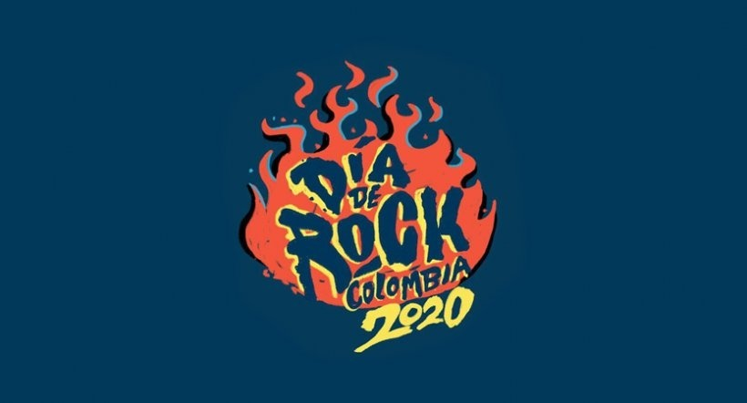

Banda: Bajo tierra, Canción-"El pobre"
Historia de la banda
El grupo fue fundado por Jaime Andrés Pulgarín, Lucas Guingue y Nicolás Naranjo en 1989, proponiendo un sonido influido por el punk y el new wave, tendencias determinantes en la formación del movimiento roquero de Medellín en los años 90. 1 El nombre "Bajo Tierra" se eligió por la procedencia subterránea del grupo, al margen de los medios masivos. Con este espíritu grabaron en 1990 un EP grabado en el estudio MidiMix por el ex-integrante de Nash, Víctor García.2 Para 1994, con el auge del movimiento roquero en Medellín, el grupo firmó un contrato con el sello Codiscos y grabó una larga duración del cual se escuchó en todo el país el tema "Ojos enfermos" y en algunas ciudades "Piedras de cielo" y "Champeta". Dos años después grabaron Lavandería Real, álbum producido por Federico López, del cual se conocieron las canciones "Las puertas del amor" y "El pobre", probablemente el tema más recordado de Bajo Tierra.3 Luego de un receso en 2000, el grupo se reunió en 2004 y presentaron tres años después un nuevo álbum. La propuesta de este nuevo trabajo fue retornar a la identidad de la banda en sus primeros años, de ahí surgió el nombre de Los días adelante.2 El 11 de agosto de 2018 después de más de diez años de inactividad, vuelven a los escenarios, esta vez en el Carnaval Fest 2018, donde cantaron todos sus éxitos, además de la canción Material duro junto a Alcolirycoz4.
El grupo fue fundado por Jaime Andrés Pulgarín, Lucas Guingue y Nicolás Naranjo en 1989, proponiendo un sonido influido por el punk y el new wave, tendencias determinantes en la formación del movimiento roquero de Medellín en los años 90. 1 El nombre "Bajo Tierra" se eligió por la procedencia subterránea del grupo, al margen de los medios masivos. Con este espíritu grabaron en 1990 un EP grabado en el estudio MidiMix por el ex-integrante de Nash, Víctor García.2 Para 1994, con el auge del movimiento roquero en Medellín, el grupo firmó un contrato con el sello Codiscos y grabó una larga duración del cual se escuchó en todo el país el tema "Ojos enfermos" y en algunas ciudades "Piedras de cielo" y "Champeta". Dos años después grabaron Lavandería Real, álbum producido por Federico López, del cual se conocieron las canciones "Las puertas del amor" y "El pobre", probablemente el tema más recordado de Bajo Tierra.3 Luego de un receso en 2000, el grupo se reunió en 2004 y presentaron tres años después un nuevo álbum. La propuesta de este nuevo trabajo fue retornar a la identidad de la banda en sus primeros años, de ahí surgió el nombre de Los días adelante.2 El 11 de agosto de 2018 después de más de diez años de inactividad, vuelven a los escenarios, esta vez en el Carnaval Fest 2018, donde cantaron todos sus éxitos, además de la canción Material duro junto a Alcolirycoz4.
Banda: Bajo tierra, Canción-"Todo bien"
Integrantes del grupo
Bajo Tierra ha estado integrada durante toda su historia por Lucas Guingue (guitarra, voz) y Jaime Pulgarín (guitarra y bajo). En sus grabaciones y giras se han acompañado de los siguientes músicos: 1990: Nicolás Naranjo (voz), Alejandro Posada (bajo), César Cure (batería), Daniel Betancourt (teclados) y Paula Vélez (saxofón). 1990 - 1994 Tato Lopera (Teclados). 1994-1997: Camilo Suárez (voz), Cuzco (teclados sampler, programación), Millo (batería), Papo (guitarra) y Pedro Villa (bajo). Carlos Olarte "Panelo" (ex-miembro de La Derecha) participó durante la grabación de Lavandería real, poco antes de su fallecimiento. En la actualidad, a Lucas Guingue y Jaime Pulgarín, los acompañan el guitarrista David Cárdenas y el baterista Alejandro Duque (quien también ha pertenecido a Aterciopelados y al grupo guatemalteco Bohemia Suburbana). 2018: Lucas Guingue(Guitarra y voz), Jaime Pulgarín(Guitarra), Camilo Suárez(Voz), Alejandro Duque(Batería), Pedro Villa(Bajo), Fredy Henao(Teclados).
Historia de los festivales en Colombia
Festival Ancón
Al finalizar los años 60 con la difusión de la música rock, el movimiento hippie experimentó un notable crecimiento en ciudades como Bogotá, Medellín y Cali, lo cual motivó la formación de numerosos proyectos ligados a la difusión de la música rock. En Bogotá se estableció el principal punto de encuentro hippie de la época en el parque de la Carrera Séptima con Calle 60, espacio que fue utilizado para conciertos, happenings y recitales de poesía. Esta experiencia fue llevada a otros espacios de la ciudad como el Parque nacional (durante el Festival de la Vida de 1970), el teatro La Comedia (actual Teatro Libre de Chapinero) y el sector de Lijacá.5 El éxito de estos eventos motivaría a la organización en Medellín del Festival de Ancón.4